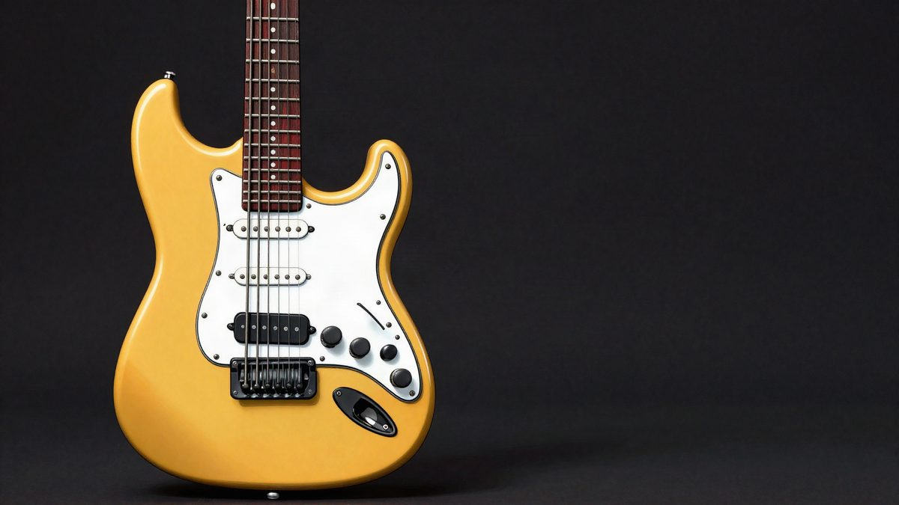
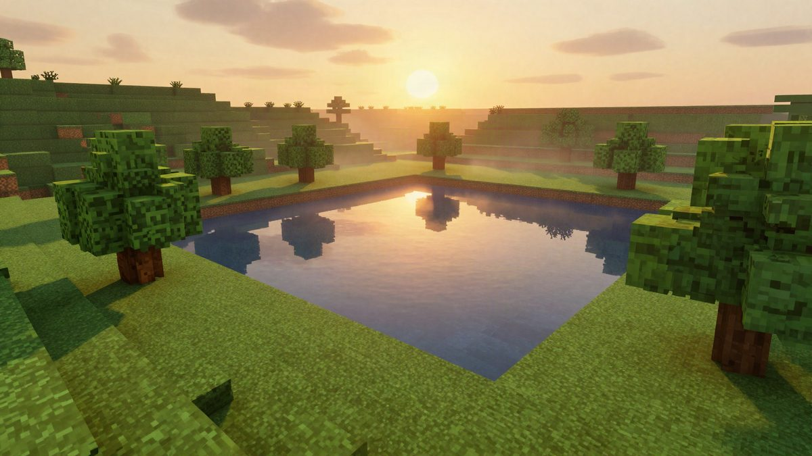

Drakong InfinaKore: Telecaster gitara-kontroler za Guitar Hero i Fortnite Festival

Drakong, podbrend proizvođača Hyperkin, počeo je u Japanu prodavati InfinaKore Telecaster Edition, gitarski kontroler izrađen prema Fenderovoj licenci. Radi na računalima, konzolama i mobitelima, a dijelovi se mijenjaju bez alata ili se mogu isprintati na 3D printeru. Cijena je oko 145 eura, a izlazak je planiran za sredinu prosinca.
Japanski distributer je 12. studenog počeo službenu prodaju kontrolera Drakong InfinaKore Telecaster Edition. Gitara za ritam igre izrađena prema Fenderovoj licenci vjerno prati oblik modela Telecaster. Rezervirati se može u trgovini WorldGameExpress, a izlazak je planiran za sredinu prosinca. Cijena je 24.970 jena s porezom (oko 145 eura).
Kontroler je razvio Drakong, pod-brend proizvođača periferije Hyperkin. Podržava PC, Nintendo Switch 2, Switch, PS5, PS4, PS3, Xbox Series X|S, Xbox One, iOS, Android i pametne televizore. Spaja se USB-C kabelom ili bežično preko 2.4 GHz i Bluetootha, a u kutiji je 2.4 GHz dongle. Za PlayStation, Xbox i Bluetooth vrijede određeni uvjeti oko načina spajanja i podržanih naslova.
Igre
Kontroler radi s igrama Fortnite Festival i Clone Hero. Prema službenoj stranici razvojnog tima podržani su i neki naslovi iz serijala Guitar Hero, među njima Guitar Hero III: Legends of Rock i Guitar Hero 5, te glavni dijelovi serijala Rock Band. Očekuje se i podrška za igre STAGE TOUR i Sound System, koje razvijaju bivši članovi tima iza Guitar Heroa.
Značajke
Tu su fret tipke, strum bar i whammy bar, dakle sve što ritam igre traže. Posebnost je tipka za tapping na sredini vrata gitare. Zamjenjuje strum bar, pa se može svirati u stilu tappinga na pravoj gitari. Proizvođač tvrdi da to pomaže kod brzih solo dionica i zahtjevnih zapisa za visoki rezultat.
Switcheve fret tipki mijenjaju se bez alata, i za popravak i za prilagodbu po osobnom izboru. Tijelo, fret tipke, glava, whammy bar i strum bar spojeni su tračnicama pa se lako skidaju. Mogu se zamijeniti dijelovima koje korisnik sam isprinta na 3D printeru. Razvojni tim navodno će besplatno objaviti datoteke za printanje.
Rezervacija tijekom studenog u Japanu donosi besplatnu dostavu.
Izvor: Automaton (JP)
Povezani članci

Minecraft za Switch 2 je stigao s boljim svjetlom i sjenama, a vlasnici Switch verzije plaćaju oko 0,60 eura28. listopada 2026. Čovjek iz Chengdua s 4.000 juana (oko 500 eura) napravio je AI seriju od 96 epizoda i skupio 600 milijuna pregleda13. studenoga 2026.
Čovjek iz Chengdua s 4.000 juana (oko 500 eura) napravio je AI seriju od 96 epizoda i skupio 600 milijuna pregleda13. studenoga 2026. Google Intelligent Eyewear: Android XR naočale koje rade i s iPhoneom12. studenoga 2026.
Google Intelligent Eyewear: Android XR naočale koje rade i s iPhoneom12. studenoga 2026.